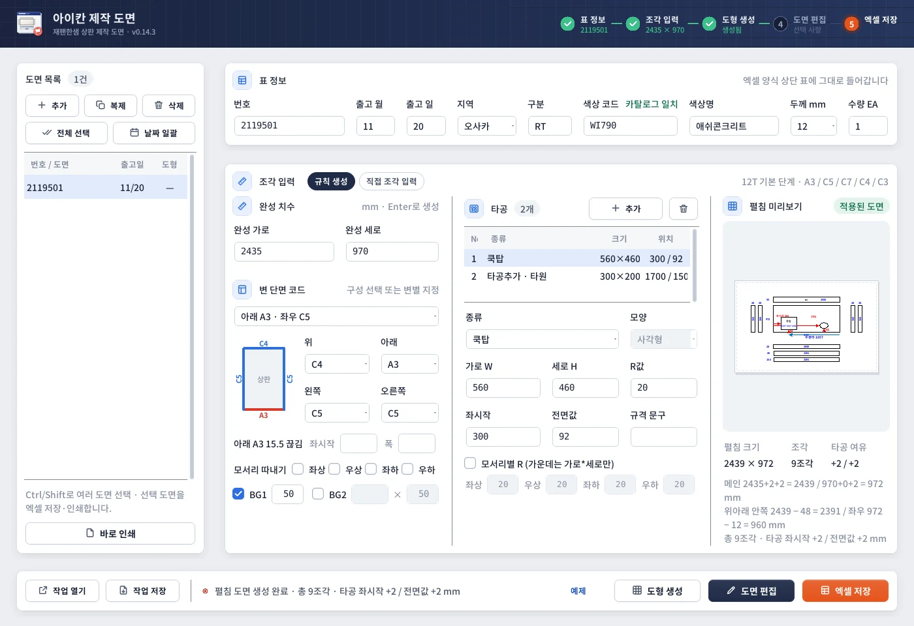
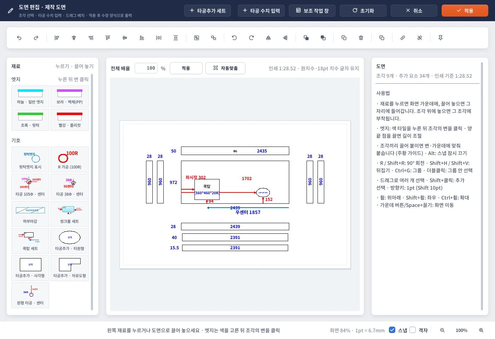

USER MANUAL · 0.14.3
아이칸 제작 도면
- 기준 버전0.14.3
- 기준일2026-11-12
- 운영체제Windows 10/11 64비트
- 필요Microsoft Excel 데스크톱
재팬한샘 상판의 완성 치수와 네 변의 단면 코드를 넣으면, 제작에 필요한 메인 상판과 덧붙임 조각을 계산해 펼침 제작 도면으로 그리고 회사 양식 엑셀로 저장·인쇄하는 프로그램입니다.
참고
이 매뉴얼의 화면과 예시 번호(2119501 등)는 가상 자료입니다. 화면은 리눅스에서 찍어 글꼴이 Windows와 조금 다릅니다.
CHAPTER 01
프로그램 개요
1-1. 주요 기능 한눈에 보기
| 기능 | 설명 |
|---|---|
| 규칙 생성 | 완성 가로·세로 + 위·아래·왼쪽·오른쪽 단면 코드 → 메인·덧붙임 조각 제작치수 자동 계산 |
| 12T · 20T | 두께별 단면 코드 목록과 계산 규칙 |
| 모서리 따내기 | 12T에서 네 모서리 중 여러 곳을 따낸 L자 메인과 따낸 변의 조각까지 |
| 타공 | 한 도면에 최대 10개 — 쿡탑·씽크볼·타공추가(사각·타원), 모서리별 R |
| BG | BG1(완성 가로 × 세로), BG2(가로·세로 직접) |
| 도면 편집 | 작업지시서 관리자와 같은 편집기 + 원형 타공·센터, 자유도형 타공 |
| 도면 목록 | 여러 도면을 목록으로 관리, 날짜 일괄, 여러 장 한 번에 엑셀 저장·인쇄 |
| 출력 | 회사 수정 양식 엑셀(한 도면 한 장), 바로 인쇄, 도면만 인쇄 |
| 작업 저장 | .ikandraw 작업 파일 |
1-2. 하지 않는 일
- 확인되지 않은 단면 규칙은 추측해서 만들지 않습니다. 목록에 없는 코드나 특수 단면은 직접 조각 입력과 도면 편집으로 그립니다.
- C9 · C2(12T)처럼 돌 EP(석절반) 단면은 영역이 따로 있어 자동으로 만들지 않고 안내 문구만 냅니다.
- 20T는 모서리 따내기 규칙이 아직 없습니다(칸이 숨겨짐).
- 원본 엑셀·PDF를 고치지 않습니다. 실제 프린터 시험 인쇄는 사람이 확인합니다.
CHAPTER 02
설치와 실행
실행 중인 제작 도면을 닫습니다.
IkanDrawingStudio_0.14.3.msi를 실행해 설치합니다. 기존 설치는 업데이트됩니다.시작 메뉴의 아이칸 제작 도면으로 실행합니다. 전용 아이콘(펼친 도면 + 주홍 인감)입니다.
작업지시서 관리자와는 따로 설치되는 독립 프로그램입니다. 관리자와 같은 도면 편집기를 쓰지만 관리자 설치·설정은 건드리지 않습니다.
주의
0.14.0을 설치했을 때 "상판 따내기 정보가 올바르지 않습니다"가 나오면 빌드에 파일이 빠진 것입니다. 0.14.1 이상으로 업데이트하세요.
CHAPTER 03
화면 구성

- 15단계 머리 띠표 정보 → 조각 입력 → 도형 생성 → 도면 편집 → 엑셀 저장. 누르면 그 단계로 갑니다.
- 2도면 목록여러 도면을 관리. 추가·복제·삭제·전체 선택·날짜 일괄.
- 3표 정보엑셀 양식 상단 표에 그대로 들어가는 9칸.
- 4규칙 생성 / 직접 조각 입력완성 치수 규칙으로 만들지, 조각을 직접 적을지 전환.
- 5완성 치수원본 도면의 완성 가로·세로. Enter로 바로 생성.
- 6변 단면 코드구성 목록에서 고르거나 위·아래·왼쪽·오른쪽을 따로.
- 715.5 끊김 · 따내기 · BGA 계열 끊김, 12T 모서리 따내기, BG1·BG2.
- 8타공 목록최대 10개. 추가로 넣고 아래 칸에서 고칩니다(완성 기준).
- 9펼침 미리보기계산 결과 미리보기와 상태 배지(적용된 도면 등).
- 10계산 근거펼침 크기·조각 수·타공 여유와 계산식.
- 11도형 생성 (F6)입력값으로 펼침 도면을 만듭니다.
- 12엑셀 저장고른 도면을 회사 양식 엑셀로.
| 구역 | 내용 |
|---|---|
| 머리 띠 | 로고와 5단계 표시: 표 정보 → 조각 입력 → 도형 생성 → 도면 편집 → 엑셀 저장. 단계마다 상태(2435 × 970, 다시 생성 필요 등)가 나오고 누르면 그 단계로 갑니다 |
| 도면 목록 (왼쪽) | 도면 여러 개. [추가] [복제] [삭제] [전체 선택] [날짜 일괄], 아래 [바로 인쇄] |
| 표 정보 | 번호 · 출고 월 · 출고 일 · 지역 · 구분 · 색상 코드 · 색상명 · 두께 · 수량 (엑셀 양식 상단 표) |
| 조각 입력 | 규칙 생성 / 직접 조각 입력 전환. 규칙 생성은 완성 치수 · 변 단면 코드 · 타공 · 펼침 미리보기 |
| 아래 작업 줄 | [작업 열기] [작업 저장] · 상태 문구 · [예제] [도형 생성] [도면 편집] [엑셀 저장] |
단축키: F6 도형 생성 · Ctrl+S 작업 저장 · Ctrl+O 작업 열기.
CHAPTER 04
빠른 작업 순서
표 정보: 번호, 출고 월·일, 지역(오사카/도쿄), 색상 코드, 두께(12/20), 수량을 넣습니다.
조각 입력 → 규칙 생성: 원본 도면의 완성 가로·세로를 넣습니다.
변 단면 코드: 구성 목록에서 고르거나 위·아래·왼쪽·오른쪽을 따로 고릅니다.
필요하면 타공을
[추가]해서 종류·크기·좌시작·전면값을 넣습니다(완성 기준).오른쪽 펼침 미리보기와 계산 근거(펼침 크기·조각 수·타공 여유)를 확인합니다.
[도형 생성](F6) — 완성 치수 칸에서는 Enter로도 됩니다.필요할 때만
[도면 편집]으로 배치·표시를 고치고[적용].[엑셀 저장]또는[바로 인쇄], 마지막으로[작업 저장].
팁
처음이라면 [예제]를 눌러 1540×650 예제로 흐름을 먼저 확인해 보세요.
CHAPTER 05
표 정보
- 색상 코드: 한 글자만 쳐도 그 글자로 시작하는 코드 목록(코드 · 두께 · 색상명)이 나옵니다. ↑↓로 고르고 Enter, 또는 클릭. Esc로 닫기. 소문자로 쳐도 대문자로 바뀝니다.
- 고른 코드가 목록과 맞으면
카탈로그 일치가 초록으로 보이고 색상명·두께가 채워집니다. - 재질명 자동 교정(새 입력·열기·출력 모두):
C031→RS301/ 스완코튼,RS301→ 스완코튼, 애시콘크리트 → 애쉬콘크리트. 덴버 12T 코드는 WT773입니다(예전 WI773은 직접 고쳐 주세요). - 번호는 출력할 때 24pt로 나갑니다(긴 번호는 칸에 맞춰 줄어듦).
- 두께를 바꾸면 그 두께에 없는 단면 코드는 첫 구성으로 바뀝니다. 생성한 뒤 바꾸면 저장·인쇄 전에 다시 생성하라고 알립니다.
CHAPTER 06
규칙 생성 — 단면 코드와 계산
6-1. 기본 규칙
- 상판 재료가 붙는 변마다 메인에 가공 여유 2mm를 더합니다. 목재만 붙는 코드(C3·C4 등)는 여유도 조각도 없습니다.
- 조각 치수는 실제 제작치수입니다. 화면에서 얇은 조각을 보기 좋게 키워 그려도 숫자는 바뀌지 않습니다(배율깨기).
- 입력을 바꾸면 미리보기만 바뀌고, 이미 적용된 도면은
[도형 생성]을 다시 눌러야 바뀝니다. 다시 생성하면 수동 편집을 기본 배치로 바꿀지 묻습니다.
미리보기 위 배지: 입력 대기 · 계산 미리보기 · 적용된 도면 · 입력 확인.
6-2. 12T 단면 코드
| 코드 | 만드는 조각 |
|---|---|
| A1 · A2 · A3 · A3' · A4 · A5 | 앞 28 · 되돌림 40 · 안쪽 15.5 (세 장) |
| B1 · B5 · B7 | 앞 28 · 넓은 되돌림(* + 2 − 12) · 보강 15.5 (N ea) — 6-4 |
| C8 | 앞 28 · 되돌림(* + 2, 기본 * 38) |
| C1 · C5 | 28 두 장 |
| C7 | 28 한 장 |
| C3 · C4 · C4' · F · X · Z · E4 | 없음 (접합 여유도 없음) |
| C9 · C2 | 없음 + 안내 문구 (EP 단면, 수동) |
길이 규칙:
- 위·아래 앞 28은 메인 가로 그대로.
- 위·아래 되돌림·안쪽 조각은 메인 가로 − 12 × (좌우 판 장수).
- 좌우 조각은 메인 세로 − 12 × (위아래 판 장수).
구성 목록(프리셋): 아래 A3 · 좌우 C5 (위 C4) / 위아래 A3 · 좌우 C5 / 아래 A3 · 좌우 C7 / 아래 A3 · 좌우 없음 (위 C4) / 추가 조각 없음. 목록과 다르게 고치면 '사용자 지정'으로 표시됩니다.
미니 상판 그림에서 A·B 계열은 주홍, 나머지는 파랑으로 보입니다.
6-3. 확정 예제
완성 1540×650, 위 C4 · 아래 A3 · 좌우 C5 → 8조각
| 구성 | 제작치수 | 수량 |
|---|---|---|
| 메인 | 1544×652 | 1 |
| 아래 앞 | 1544×28 | 1 |
| 아래 되돌림 | 1496×40 | 1 |
| 아래 안쪽 | 1496×15.5 | 1 |
| 왼쪽 | 28×640 | 2 |
| 오른쪽 | 28×640 | 2 |
좌우를 C7로 바꾸면 좌우가 한 장씩이라 아래 안쪽 조각이 1520이 됩니다(1544 − 12 × 2).
6-4. B 계열 — 넓은 되돌림과 보강
B1·B5·B7을 고르면 * 칸(기본 240)과 보강 ○ ea 칸이 나타납니다.
| 조각 | 짧은 변 | 긴 변 |
|---|---|---|
| ① 앞판 | 28 | 그 변의 가로 |
| ② 넓은 되돌림 | * + 2 − 12 (240 → 230) |
가로 − 12 × (직각 변 중 판이 붙는 변 수) |
| ③ 보강(쐐기) | 15.5 | ②의 짧은 변 — 한 장만 그리고 6ea처럼 개수 표기 |
- 보강 개수 0이면 그리지 않습니다.
- 이웃 변이 C1·C5(28 두 장)이면 안쪽 판은 되돌림 폭만큼 짧아집니다.
예: 2435×970, 위 B1 · 아래 A3 · 왼쪽 C1 · 오른쪽 C4 → 메인 2437×974, 위 28×2437 · 230×2425 · 15.5×230 6ea, 아래 28×2437 · 40×2413 · 15.5×2413, 왼쪽 28×950 · 28×720.
한 변 안에서 일부 구간만 B1인 경우(손 도면의 1625처럼)는 지금은 변마다 코드 하나라 전체 길이로 계산됩니다. 그런 도면은 편집기에서 숫자를 확인하세요.
6-5. A 계열 15.5 끊김
위·아래 변이 A 계열이면 아래 A3 15.5 끊김 · 좌시작 [ ] · 폭 [ ] 줄이 나타납니다.
- 좌시작: 완성 상판 왼쪽 끝에서 끊김 시작까지(mm), 폭: 끊긴 길이.
- 두 칸 모두 비우면 한 장. 한 칸만 적으면 나머지를 입력하라고 알려 줍니다.
- 왼쪽 토막 = 좌시작 + 왼쪽 여유(2) − 12 × 왼쪽 판 장수, 오른쪽 토막 = 전체 − 왼쪽 − 폭.
예: 2435×970, 아래 A3 · 좌우 C5, 좌시작 800 · 폭 300 → 15.5×778과 15.5×1313.
도면에는 두 토막을 끊긴 만큼 띄워 그리고, 15.5는 왼쪽 토막에만 적습니다. 엑셀 조각 목록은 두 줄이 됩니다.
6-6. 20T 규칙
두께 20이면 코드 목록이 바뀝니다. 짧은 변 = 단면 내림 + 2, 붙이는 순서는 아래 → 좌우 → 위입니다.
| 코드 | 짧은 변 |
|---|---|
| B · A85 · A100 | 52 |
| B1 | 17 |
| B2 · C2 · E2 | 22 |
| B3 | 32 |
| F · F1 · G | 없음 |
- 아래 조각: 메인 가로 × 짧은 변 / 좌우: 메인 세로 − 아래 짧은 변 / 위: 메인 가로 − 좌우 짧은 변.
예: 1390×750, 아래 B · 좌우 B3 · 위 C2 → 메인 1394×754, 아래 1394×52, 좌우 32×702 두 장, 위 1330×22.
6-7. 모서리 따내기 (12T)
변 단면 코드 아래
모서리 따내기 ☐좌상 ☐우상 ☐좌하 ☐우하에서 따낼 모서리를 켭니다(여러 곳 가능).켠 모서리마다 완성 가로 × 세로와, 따낸 가로변·세로변의 단면 코드를 고릅니다.
위·아래·왼쪽·오른쪽 코드는 따내고 남은 바깥 구간에 붙습니다.
- 메인은 L자 윤곽, 판이 붙는 변은 모두 +2(따낸 변 포함).
- 볼록 모서리에서는 이웃 변의 +2만큼 길어지고, 따낸 안쪽 모서리에서는 짧아집니다.
- 따낸 가로·세로 변의 제작 길이는 파랑 16pt로 적고, 조각은 그 구간에 맞춰 놓습니다.
- 따낸 자리에 걸치는 타공은 생성 전에 알려 줍니다.
예: 2435×970, 위 C4 · 아래 A3 · 좌우 C5, 우하 800×300 따내기(가로변 A3 · 세로변 C5) → 메인 2439×972(L자), 따낸 가로변 28×800 · 40×752 · 15.5×752, 따낸 세로변 28×276 두 장.
6-8. BG
- BG1: 가로는 완성 가로 고정(메인 가로 아님), 세로만 입력(기본 50). 예: 완성 1540 → BG 1540×50.
- BG2: 가로·세로 모두 입력.
- 둘 다 켜면 위쪽에 두 장이 쌓입니다. 이름은 가운데 검정
BG, 치수는 파랑.
CHAPTER 07
타공 (규칙 생성)
타공 칸의
[추가]— 한 도면에 최대 10개. 첫 타공은 쿡탑, 다음부터는 타공추가로 시작합니다.목록에서 고른 타공을 아래 칸에서 고칩니다: 종류(쿡탑·씽크볼·타공추가), 모양(타공추가만: 사각형/타원형), 가로 W · 세로 H · R값, 좌시작 · 전면값, 규격 문구.
[삭제]로 지웁니다.
- 좌시작·전면값은 원본 완성 치수 기준으로 넣습니다. 왼쪽·아래 변에 판이 붙으면 그 여유(+2)를 더해 그립니다. 예: 좌시작 100 · 전면값 70 → 도면 102 · 72. 타공 크기에는 여유를 더하지 않습니다.
- 규격 문구가 비면 입력 치수로 씁니다. 타원은 실제로는 R 사각 타공이라 R을 넣고
(300*200*30R)처럼 적습니다. - 모서리별 R: 체크하면 좌상·우상·좌하·우하 R을 따로 넣습니다. 가운데 문구는
(가로*세로)만, 각 R은 안쪽 모서리에R10처럼 파랑으로. R은 짧은 쪽의 절반 이하. - 완성 상판 범위를 벗어나면 "타공 2이 완성 상판 범위를 벗어납니다."처럼 몇 번째인지 알려 주고 만들지 않습니다.
CHAPTER 08
직접 조각 입력
규칙이 없는 단면·특수 형상은 직접 조각 입력으로 바꿔 조각의 제작 치수를 직접 적습니다.
- 줄마다 조각 하나.
[선택 줄 BG 표시 / 해제]로 BG 이름을 붙이거나 뗍니다. - 규칙 작업에서 이 모드로 바꾸면 규칙 연결을 끊을지 묻고, 지금 조각과 도면은 그대로 둡니다.
- 예전 작업(schema 1·2)은 이 모드로 열리며 저장된 수동 도면을 다시 배치하지 않습니다.
CHAPTER 09
도면 편집

- 1타공추가 세트상판을 고르고 모양을 골라 타공을 추가.
- 2타공 수치 입력W/H/R·좌시작·전면값·문구·모서리별 R을 넣어 배치.
- 3보조 작업 창표 정보와 조각 목록을 옆에 띄웁니다.
- 4좌시작 (빨강 14pt)완성 기준 300 + 왼쪽 여유 2 = 제작 기준 302.
- 5조각 안 치수좌우 세로 조각은 세로 글자로 조각 안에.
- 6타공추가 재료타원형·사각형·자유도형. 상판 위로 끌어 놓기.
- 7원형 타공 · 센터38Φ 원과 센터선·nn센터. 옆에 원형 타공 추가로 줄지어 넣기.
- 8적용편집을 도면에 반영합니다.
[도면 편집]은 작업지시서 관리자와 같은 편집기입니다(선택·이동·회전·그룹·잠금 등은 관리자 매뉴얼 참고). 제작 도면에서 더 쓰는 것:
| 도구 | 설명 |
|---|---|
[타공추가 세트] · [타공 수치 입력] |
상판을 고르고 W/H/R·좌시작·전면값·문구를 넣어 배치. 모서리별 R 줄도 있음 |
| 기호 › 타공추가 · 타원형 / 사각형 / 자유도형 | 상판 위로 끌어 놓거나, 상판을 고르고 누르기 |
| 자유도형 윤곽 그리기 | 꼭짓점을 차례로 클릭(3~64개), 오른쪽 클릭 = 마지막 점 취소, Ctrl+Z. 교차·면적 없는 윤곽은 안 됨. 엑셀에도 편집 가능한 도형으로 나감 |
| 기호 › 원형 타공 · 센터 | 기본 38Φ. 파란 원과 지름, 위 변 → 센터 빨간 선 + nn센터 |
| 원형 타공 속성 | 지름 Φ, 좌·우·위·아래 센터(mm), 변에서 센터까지 / 다른 타공에서 센터까지 체크, 지름 표시 체크 |
| 옆에 원형 타공 추가 | 센터 간격(기본 150) 입력 후 [← 왼쪽] [오른쪽 →] [↑ 위] [↓ 아래] — 같은 지름 구멍과 센터 간격 선 |
- 원형 타공의 센터값도 완성 기준으로 넣으면, 판이 붙은 변 쪽에 +2를 더해 적습니다(좌센터 300.5 →
302.5센터). 어느 변에 여유가 붙는지 속성 칸 아래에 안내합니다. - 제작 도면에서는 소수 치수(102.5 등)를 반올림하지 않고 그대로 적습니다. 원을 끌면 0.5mm 단위로 맞춥니다.
- 이미 놓인 타공의 오른쪽 속성 수치는 제작 기준입니다. 거기서 고친 값에는 여유를 다시 더하지 않습니다.
- 글자끼리 겹침을 자동으로 피하지는 않습니다. 좁은 자리는 글자를 끌어 옮기세요(옮긴 위치는 기억).
CHAPTER 10
도면 표시 규칙
| 항목 | 표시 |
|---|---|
| 상판·조각 치수 | 14pt 파랑 (#0000FF) |
| 펼침 조각의 긴 치수 | 조각 안쪽 가운데, 좌우 세로 조각은 세로 글자 |
| 타공 좌시작·전면값 | 14pt 빨강, 화살표와 같은 색 |
| 타공 가운데 규격 문구 | 작게, 파랑 (작은 타공은 더 줄어듦) |
| 따낸 변 길이 | 16pt 파랑 |
| 출력 번호 | 24pt |
| 테두리 | 1.2pt |
배율깨기: 15.5·28·40처럼 얇은 조각은 보기 좋게 키워 그리되 두께 차이는 유지합니다. 실제 mm·타공 위치 계산은 바뀌지 않습니다.
CHAPTER 11
도면 목록
[추가]: 직전 표 정보와 코드 조합을 이어받고 치수는 비운 새 도면.[복제]: 도면·치수·편집 상태를 복제하고 번호만 비움.[날짜 일괄]: 고른 도면들의 출고 월·일을 한 번에.- Ctrl / Shift로 여러 도면을 골라 한 번에 엑셀 저장·인쇄합니다.
도형열은 — / 생성 / 편집, 번호 없는 도면은 흐리게 보입니다.
CHAPTER 12
엑셀 저장과 바로 인쇄
[엑셀 저장]: 고른 도면을 회사 수정 양식 엑셀로(도면마다 한 시트, 인쇄 영역 A1:AZ38 한 장).[바로 인쇄]: 목록 순서·부수·흑백/컬러·프린터 상세 설정, 도면만 인쇄도 고를 수 있습니다. Windows 기본 프린터는 바꾸지 않습니다.- 여러 장은 Excel을 한 번만 띄워 준비·합치기·PDF까지 처리합니다(0.14.2, 28장 기준 1~2분 단축 기대).
주의
0.7.0~0.14.2에서 저장한 엑셀은 행 높이가 늘어나 인쇄가 53%로 작게 나올 수 있습니다(양식의 행 높이 고정 표시 오류). 0.14.3에서 다시 저장·인쇄하세요. 이미 저장한 파일은 자동으로 고쳐지지 않습니다.
CHAPTER 13
작업 저장과 호환
[작업 저장](Ctrl+S) → .ikandraw. 도면 목록 전체, 표 정보, 완성 입력·코드·타공, 적용 당시 입력, 현재 도면을 함께 저장합니다.
| 작업 파일에 든 것 | 여는 데 필요한 버전 |
|---|---|
| 규칙 작업 (schema 3) | 0.3.0 이상 |
| BG·자유도형 (schema 4) | 0.4.0 이상 |
| C7 | 0.4.1 이상 |
| 여러 타공·원형 타공 (schema 5) | 0.6.0 이상 |
이전 버전 파일은 새 버전에서 그대로 열리고(새 칸은 기본값: 끊김 없음·따내기 없음·모서리별 R 꺼짐), 열기만으로 수동 도면을 다시 배치하지 않습니다. 여러 PC가 주고받으면 같은 최신 버전을 쓰세요.
CHAPTER 14
문제 해결 (FAQ)
도면 편집·엑셀 저장을 누르면 "도형을 먼저 생성하세요"가 나와요.
생성한 뒤 입력을 바꾼 상태입니다. [도형 생성](F6)을 다시 누르세요. 머리 띠에 다시 생성 필요가 보입니다.
인쇄가 전체적으로 작게(53%) 나와요.
0.14.2 이하에서 저장한 엑셀입니다. 0.14.3에서 다시 저장·인쇄하세요.
단면 코드 목록에 필요한 코드가 없어요.
아직 규칙이 확정되지 않은 코드입니다. 직접 조각 입력으로 그리고, 실제 사례를 모아 규칙 추가를 요청하세요.
타공 좌시작이 입력보다 2 크게 나와요.
정상입니다. 왼쪽(전면값은 아래) 변에 판이 붙으면 접합 여유 2mm를 더해 제작 기준으로 적습니다.
색상 코드를 넣었는데 색상명이 안 채워져요.
목록에 없는 코드입니다(카탈로그 일치가 안 보임). 코드를 확인하거나 색상명을 직접 적으세요.
엑셀 저장이 오래 걸려요.
0.14.2부터 여러 장을 Excel 한 번으로 처리합니다. 그래도 느리면 Excel이 다른 창(대화상자)을 띄우고 있지 않은지 확인하세요.
CHAPTER 15
버전 이력
| 버전 | 내용 |
|---|---|
| 0.14.3 | 인쇄 53% 축소 수정(양식 행 높이), 장마다 인쇄 영역 명시 |
| 0.14.2 | 여러 장 엑셀 저장·인쇄 때 Excel 한 번만 실행 |
| 0.14.1 | 0.14.0 빌드 누락 파일 보완 |
| 0.14.0 | 12T 모서리 따내기 |
| 0.13.1 | 색상코드 WI773 → WT773 |
| 0.13.0 | A 계열 15.5 끊김 |
| 0.12.0 | B5·B7도 넓은 되돌림·보강 규칙 |
| 0.11.0 | B1 넓은 되돌림·보강 N ea |
| 0.10.0 | 타원 타공 R값, 모서리별 R |
| 0.9.0 | 원형 타공 센터 간격·옆에 추가, 센터값 접합 여유, 소수 표기 |
| 0.8.0 | 네 변 단면 코드 전체(12T·20T), * 폭 |
| 0.7.0 | 20T 규칙, BG1·BG2, 색상 코드 자동완성, 엑셀 상단 축소 |
| 0.6.0 | 여러 타공(최대 10), 타원/사각, 조각 안쪽 치수, 원형 타공·센터 |
| 0.5.0 | 전용 아이콘, 화면 전체 리메이크(5단계 머리 띠) |
| 0.4.x | BG, 타공추가 재료 3종·자유도형, C7, 재질명 교정, 글자 크기·색 |
| 0.3.x | 완성 치수 규칙 생성(A3·C5·C4), 배율깨기, 파란 치수 |
아이칸 제작 도면 사용 설명서 · 기준 버전 0.14.3 · 정리 2026-11-12 · 주식회사 아이칸 사내용